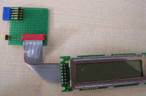

july 2005
RPD LCD
Device containing thé standard LCD display. R/W of the LCD is not used and is tied to ground.

JALcc macro call
if number of lines or number of characters is omitted, the default of 2*16 is used.
JALcc use
JALcc macro expansion

And here the total program
which will